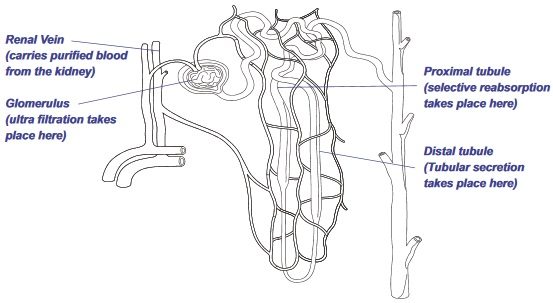

New Senior School Biology Practical Activity & Work Book Two
Chapter
5
EXCRETORY SYSTEM AND MECHANISMS
Notable Concepts
Excretion and
Excretory products.
Excretory structures and excretory System in mammals.
Excretion in plants.
Background Information
By-products of metabolic activities, excess food, water and substances that cannot be stored in the body and other unwanted materials by the body but which were present in absorbed food, all constitute waste substances. The removal of these wastes from the body of living things is what is known as excretion.
Excretory substances in some organisms include carbon dioxide, water, urea, uric acid, mineral salts etc. most of these are by-products of body metabolism.
Excretion and the process of water balance (Osmoregulation) are closely related both are involved in maintaining a constant internal environment (homeostasis).
Organism
Excretory Structure and Products
Mechanism of the Process of Excretion in the Organism
Acellular organisms e.g. Amoeba, paramecium, Euglena, Chlamydomonas etc
contractile Vacuoleexcess water, carbon (iv)oxide, and nitrogenous waste are the main excretory products.
Simple diffusion process. Excess water which collects at the contractileVacoule enlarge it and causes it to expand and empty its content through the plasma membrane
Planaria (atworm)
Flame cells (pronephridium) Ammonia, carbon dioxide and water are excretory product of the planaria
Each ame cell receive waste products from surrounding cells (this process is thought to be aided by the agella) into the tubules from which the uid is passed out.
Anelids: Earthworm
A pair of nephridia Nitrogenous wastes, carbon(iv) oxide, mineral salts.
Urea is extracted from the blood within the capillaries surrounding the nephridia into the nephridia Also waste collected into the nephrostone (cilliated funnel) from the body cavity. They move along te tubes of the nephridia along which salts and other useful substances can be reabsorbed through the walls of the tube while the rest are passed out as urine through the relaxation of the sphincter muscle. Carbon iv oxide is excreted by diffusion from blood vessels in the epidermal cells and also together with mineral salts in form of calcium carbonate through the gut
Crustaceans
Green glandexcretory products are nitrogenous wastes, water, mineral salts and carbon dioxide. Gills can also perform excretory function as in craysh through which carbon (iv) oxide is excreted.
Excess water, salts and nitrogenous wastes are excreted by the green gland after ultra ltration for the passage of water and salts into the end sac and selective reabsorption of salts and glucose through the walls of the white tube.The urine formed is collected in the urinary bladder and passed out by contraction of the walls of the bladder.
Insects
Malpighian Tubule Excretory products include uric acid, carbon dioxide. Excretion by storage can also occur in insects. Here uric acid is stored harmlessly in some special fat bodies within the insect
At the distal part of the malpigian tube, nitrogen wastes and water from the haemocoel (body cavity) are absorbed. The nitrogenous waste is converted to uric acid at the proximal end of tubule towards the gut by the addition of carbon dioxide. uric acid is precipitated while sodium and potassium ions are reabsorbed (iv). The uric acid is passed to the rectum through the ileum. water is reabsorbed at the rectum and uric acid mixed with faeces is passed out.
Vertebrates
Kidneys, liver, lungs and, Skin. Water, salts, nitrogenous waste and bilirubin constitute the major excretory wastes
The kidneys maintains water balance and excretes nitrogenous wastes and water, the lungs excrets carbon dioxide while water and salts are excreted through the skin.
THE HUMAN URINARY SYSTEM
fig5.1:
Excretory System in Mammals
Excretory system in mammals consists of the following organs:
The Kidneys: which excretes nitrogenous wastes, water and mineral salts it also performs an osmoregulatory function.
The Lungs:The lungs excrete carbon dioxide and water, which are waste products of cellular respiration.
The Liver : which excretes bilirubin through the bile.
The Skin: It is involved in the excretion of water, mineral salts and urea. The skin is a minor excretory organ, its main function is the regulation of body temperature. The rst three are the major excretory organs in mammals.
Mechanism of urine formation
fig5.2:
The Kidney is a bean shaped organ which is in pair and it is positioned at the lower part of the vertebral column. The renal arteries carry blood into the kidneys while puried blood leave the kidneys through renal veins.
The kidney produces or forms urine. The urine ows to a tube called urethra to the bladder which is a storage organ. The bladder them empties the urine to the outside through the urethra
Internal structure of the kidney and mechanism of urine formation
Structurally each kidney consists of the outermost part called renal cortex; below the part, in the inside is the renal medulla and then the renal pelvis.
Filtration of blood and urine formation takes place at the cortex and medulla while the pelvis is a large cavity where urine collects and then drained by the urethra. The renal cortex and renal medulla has over a million microscopic structures called nephrons within which blood is puried and urine is formed.
The table below explains, the functions of different parts of the nephron as regards urine formation and osmoregulatory function of the kidneys.
Part / Location
Functions
1
Renal artery (at the cortex)
Branches into small blood vessels, each of them end in a group of capillaries called glomerulus’s, then branches into a capillary net work around the tubes before joining to the renal vein.
2
Renal Vein (at the cortex)
It continues from the carpillaries from the renal artery surrounding the tubules. It arries puried blood from the kidneys.
3
Glomerulus’s (at the cortex)
A knot of blood carpillaries located at the bowman’s capsule within which untralteration takes place (water, urea, mineral salts, Sugar and plasma solutes are ltered through into the capsular space).
4
Bowman’s capsule (at the cortex)
Glomerular ltrate lter into its space (the capsule and glomerulus form the malpighian corpuscle a high pressure of the blood at the gomerulus enhances).
5
Proximal Tubule (just behind the bowman’s capsule at the renalcortex)
The process of untratration into the capsule. Selective reabsorption takes place, water is reabsorbed , also amino acids salts and glucose are reabsorbed into the blood capillaries by active transport.
6
The henlee’s loop (it dips into the medulla and back to the cortex)
Same as in (5) above
3
Distal tubule (at the renal cortex)
Here there is tubular secretion. Waste molecules like creatinine are secreted in the tubule. Also if need be ions of H+, K+ and Hco are secreted into the tubule to maintain an osmotic balance, on the other hand more sodium ion can also be reabsorbed into the capillaries thus causing more water to be absorbed into the blood capillaries by osmosis.
8
Collecting Duct
Sodium ion can be pumped back into the blood capillaries by active transport with more water owing into the blood capillaries by osmosis. In this way, the blood recovers up to 99% of the water and sodium that is ltered into the bowman’s capsule leaving a concentrated urine to ow to the urethra through the pelvis.
Excretion in plants
The main excretory wastes in plants are water, carbon dioxide and oxygen which diffuse through the stomata (via the intercellular spaces in tissues) in leaves and young stems, pass out through lenticel in old stems and through root surfaces in roots.
Also in plants excess water is excreted by the process of transpiration in form of water vapour or as droplets through the process of guttation. Minor plant wastes such as calcium oxalate, calcium trioxocarbonate(iv) tannins, glycosides, alkaloids and plant oil can be stored in harmless insoluble forms. Poisonous stored excretory products are removed during leaf fall.
General Questions
1. The nitrogenous compound which is the most poisonous of the metabolic wastes is
2. Contractile vacuole in amoeba and paramecium carry out excretory and
function.
fig5.3:
3. The excretory structure in fig 5.3 is a
it can be found among
4. Write down three excretory products that can be excreted through the excretory structure in 3 above
5. In an earth worm urea can be excreted through an excretory structure called
6.
is an excretory and Osmoregulatory structure among crustaceans.
7.Insects respire by means of trachea but they excrete by means of
8.Among insects, nitrogenous wastes are excreted in form of
9.Which blood vessel carries blood to the kidney?
is this blood an oxygenated blood or deoxygenated blood?
10.Where does ultraltration take place in the kidney?
11.Each kidney is made up of
in its cortex and medulla within which urine formation takes place
12.Write down one excretory product that the liver removes
13.Write down the name of the cup shaped structure that receives the products of ultra ltration
14.Write down the three main excretory organs in mammals
15. Where does both tubular secretion and selective re-absorption take place in the kidney?
Distal tubule at the renal cortex
Proximical tubule
glomerulus
16. Selective re-absorption of sodium ion from the kidney tubules back to the blood occurs by a process called
17.Write down three excretory structures in plants
18.Write down the three main excretory products of plant
19.Excess water is removed as water vapour from plants leaf surface by a process called
Expression Exercise
1.(a) Write down three factors that enhances selective reabsorption of substances at the tubules in the nephron which is a process involved in urine formation.
(b)Write down against each process the part or parts the process occurs in the urinary system
Ultra ltration
Selective reabsorption
Tubular secretion
Collection of urine formed
2.(a)During the glomerular ltration, why is it that not all the substances present in the blood are ltered off into the Bowman’s capsule?
(b)Write down up to four of such substances that are not ltered off
(c) Identify and label the following in the kidney diagram below
The part where ultra ltration take place
The part where selective reabsorption take place
The part of tubular secretion
The part that carries puried blood from the kidneys
fig5.4:

3.(a)What is osmoregulation?
(b)Explain how the excretory function of the kidneys relate to their osmoregulatory function.
Test of practical works/Alternative to practical
fig5.6: A
A.
fig5.6 B
B.
Identify each of the structures above and an example of an animal where each can be found.Compare the structures and functions of A and that of B.
(b)What are the contents of the nitrogen waste produced in B?
fig5.7 B
Identify the diagram of the excretory structure above and state one animal where it can be found?
Find out
Why the right kidney is slightly lower that the left kidney?
How many times each day, the entire human blood is filtered by the kidneys
EXCRETORY SYSTEMS AND MECHANISMSPAST SSCE Questions
JUNE 1994Q10
1 .Study the diagram below and use it to answer question 1a and (b)
fig5.8 B
(a)Name the pairs labeled I and VI
I.
VI.
and their functions
I
VI
(b) State the functions of the parts labeled II and V
(c) In which organ in the mammalian body is urea formed?
June 1996 Q3a,b,c,&d
Study the diagram below and use it to answer Question 3
fig5.9:
Name the structure illustrated above
Name the parts labeled A-D above
(c) State the function of the part labeled C
(d) In which group of animals is this structure found


 A.
A.